Tree-based methods: Decision trees for regression and classification
Module code: EC4308
Module title: Machine Learning and Economic Forecasting
Instructor: Vu Thanh Hai
Reference: ISLR = An Introduction to Statistical Learning, Ch. 8.1 (R packages: tree, rpart)
Acknowledgement: I adapt Dr. Denis Tkachenko’s notes with some minor modifications. Thanks to Denis!
Lecture outline
Introduction and overview of the main ideas.
Decision trees and the CART algorithm.
Choosing tree size.
Classification trees: loss functions and performance measures.
Concluding remarks.
1) Introduction
So far, we have stayed within the familiar parametric model framework: estimating linear regressions with various regularizations.
Although some of the models fitted could be classified as nonparametric (e.g., polynomial series whose degree grows with the sample size), we still wrote down the models in terms of a vector of parameters.
Today we will talk about methods that belong to the realm of nonparametric estimation.
1) Introduction
Specifically, we discuss the so-called regression trees and related methods, which are widely used in data science applications: CART (classification and regression trees), BART (Bayesian additive regression trees), MARS (multivariate adaptive regression splines), random forests… This chapter covers CART; ensemble methods come later.
“Of all the well-known learning methods, decision trees come closest to meeting the requirements for serving as an off-the-shelf procedure for data mining.” (Hastie et al., 2009, The Elements of Statistical Learning, ESL)
These methods are also quickly gaining traction in the econometric literature related to both prediction and causal inference.
Trees can handle both regression and classification problems.
1) Introduction
One could say: “But I’ve never heard of this stuff – what is there to gain over the usual regression-based methods?”
Preview of pros: flexible, needs no standardization of the data, selects variables, computationally efficient, scales up well, interpretable.
Preview of cons: simple trees will likely lose out to other methods on prediction and do not naturally lead to continuous models; ensembles of trees (bagging, boosting, random forests) improve prediction but at the cost of interpretability.
2) Decision tree
Basic logic: use a series of steps to reach a decision (ideally, we combine mini-decisions into good choices).
Each decision (green box) is a node. The first node is called the root node.
The final decision (red box) is a leaf node (or a leaf).
2) Regression tree idea
Hitters data (ISLR Ch. 8; middle and right panels: Figs. 8.2 and 8.1): predict \(y=\log(\text{Salary})\) of baseball players from Years and Hits. Left: color = salary (cool colors low, warm colors high). Middle: regions \(R_1\)–\(R_3\). Right: the tree; leaf values are mean log salary.
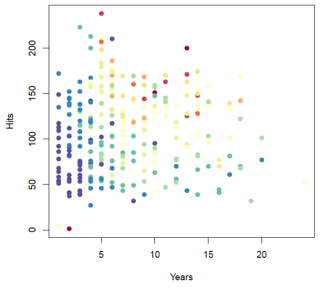
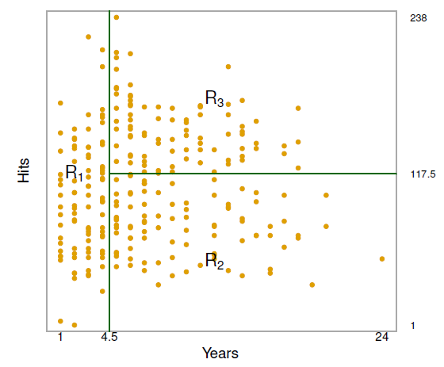
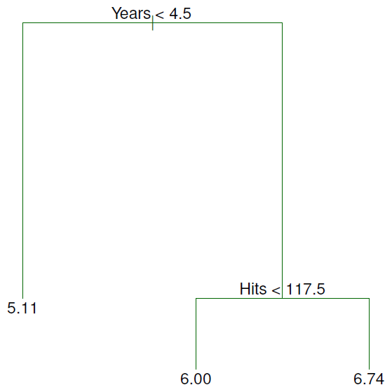
Overall, the tree stratifies or segments the players into three regions of predictor space:
Partition into boxes \(R_1\)–\(R_5\) (left), the tree that produces it (middle), and the fitted step surface (right). Source: ESL Fig. 9.2.
2) Regression tree idea
Ideally, for a fixed number \(M\) of boxes, we would choose the partition \((R_1,\dots,R_M)\) to minimize (where \(\hat y_{R_m} \equiv \hat c_m\) is the mean of \(y\) in \(R_m\)):
Problem: finding the best partition is computationally infeasible. We cannot enumerate all possible trees, i.e., all combinations of a first split and lower-level splits.
Thus, we use a greedy method: make the best split at each step, without looking ahead.
2) Building a tree: CART
Main idea: form the tree using recursive binary partitions of the data.
Step 1: define \(R_1(j,c)=\{X \mid X_j<c\}\) and \(R_2(j,c)=\{X \mid X_j\ge c\}\), and choose the predictor \(j\) and cut-point \(c\) to solve
where \(\hat y_{R_k}\) is the forecast of \(y\) based on data in region \(R_k\) (usually the sample mean of \(y\) in that region).
2) Building a tree: CART
Step 2: Split the data into the two subregions from Step 1. Repeat the splitting process for each subregion, taking the split that minimizes the squared loss. Keep iterating this step.
Step 3: Stop when the stopping criterion allows no further split (e.g., every split must leave at least 5 observations in each child node).
2) Building a tree: Boston data
Boston data: medv (median home value) on lstat (% lower-status population) only; pruned to 7 leaves, the size cross-validation (CV) picks in Section 3.
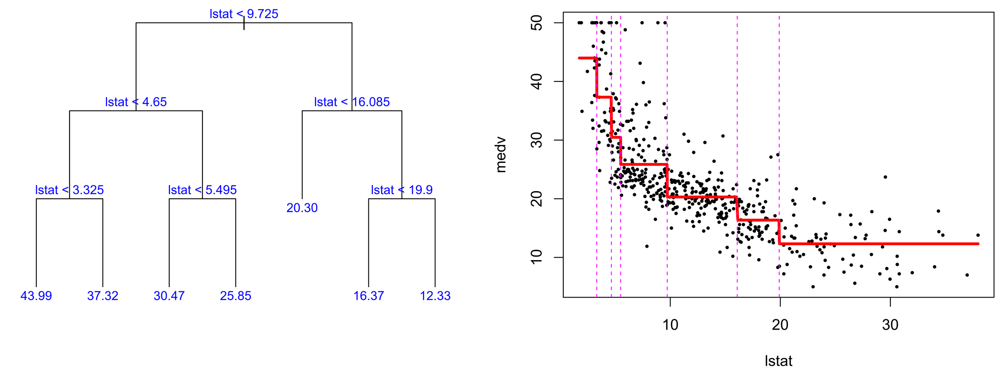
At each interior node, we go left if \(x<c\), right if \(x\ge c\).
Each observation goes down the tree until it reaches a leaf.
The leaves give a partition of \(X\)-space into disjoint regions.
2) Building a tree: Boston data
The resulting fitted function is just a step function with steps given by the tree partition.
To make a prediction, find the interval to which the new observation belongs and set the forecast equal to the sample mean of that region.
2) Building a tree: Boston data
Consider an additional predictor \(x_2=\)dis (weighted mean of distances to five Boston employment centers). Again pruned to 7 leaves.
We can see how the \(X\)-space is partitioned.
Notable feature: automatic interaction detection (in this fitted tree, dis is used only in some ranges of lstat).
Reading guide: dis is used in three of the four lstat bands, but not for \(9.725\le\)lstat\(<16.085\) (leaf 20.3). In this fitted tree the effect of dis depends on lstat: suggestive of an interaction, found without being told.
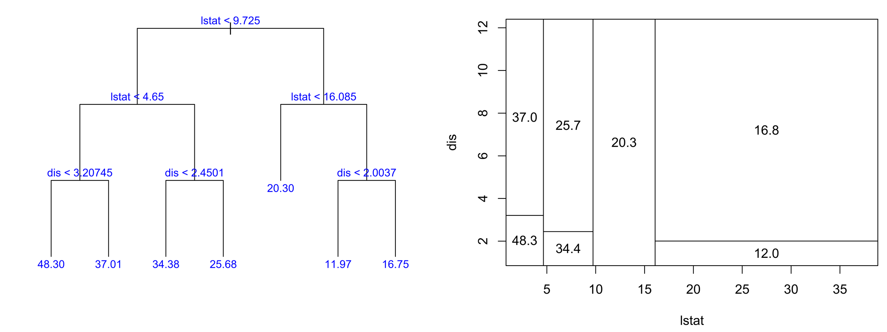
2) Building a tree: Boston data
The estimated function is again a step function with steps given by the tree partition (one plateau per leaf):
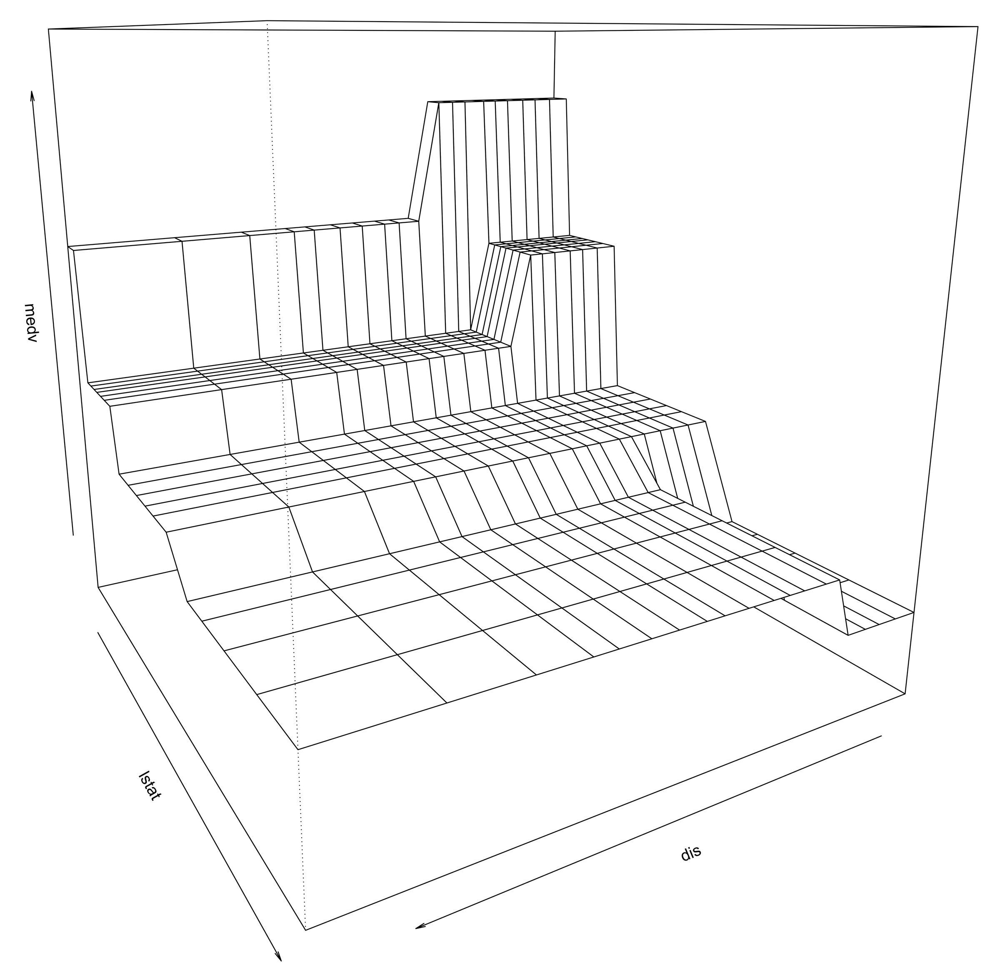
2) Boston data: big tree
Big tree for just lstat (tree package, mindev = 0.0001): a node is split only if its deviance is at least 0.0001 × the root node’s deviance; each child keeps at least 5 observations. The labels are unreadable by design: this tree is far too big and chases noise.
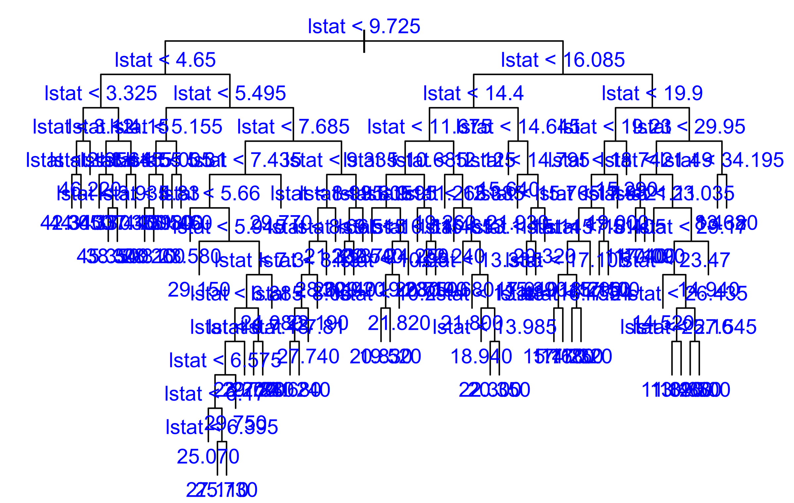
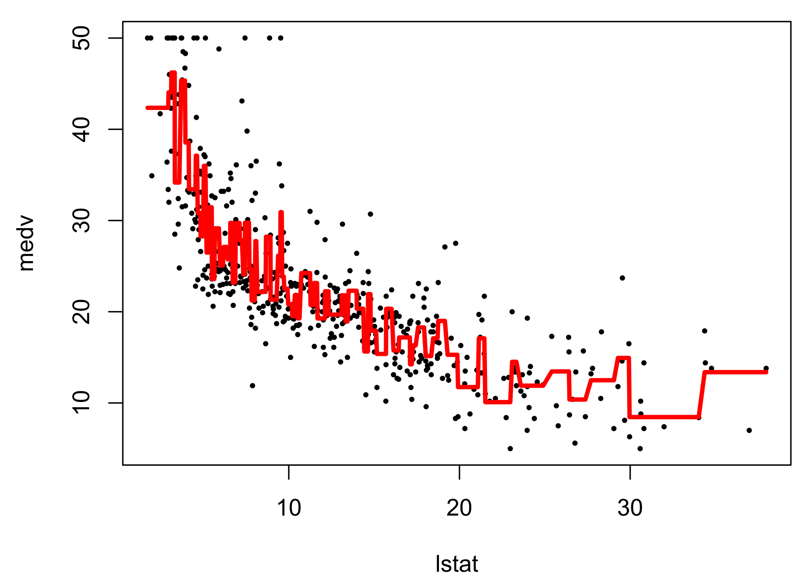
2) Building a tree: 401(k) example
Data: 1991 Survey of Income and Program Participation (SIPP), \(N=9{,}915\). We try to predict 401(k) eligibility.
In Section 4, trees are fit on a training sample of 8,000 and evaluated on the remaining 1,915 (test sample).
List of predictors: income, age, schooling, family size, married dummy, male dummy, two-earner household dummy.
Such a classification model could be used to estimate propensity scores for studying the effect of 401(k) eligibility on wealth (e.g., Belloni et al., 2014, who use Lasso; modern causal ML uses random forests or Double ML).
Since eligibility is a binary variable, predicting it is a classification problem (its splitting criteria come in Section 4).
2) 401(k) data: simple tree
For a simple tree with depth \(\le 4\) fit on all 9,915 observations, leaves show the predicted class and counts of \(y=0\) / \(y=1\):
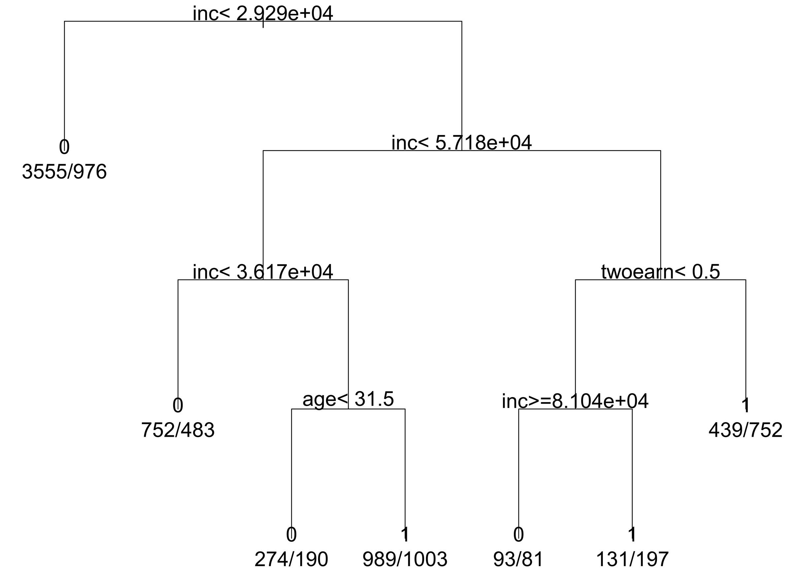
rpart draws the branch where the printed condition holds on the left (e.g., inc>=8.104e+04).
2) 401(k) data: big tree
Now allow depth \(\le 30\).
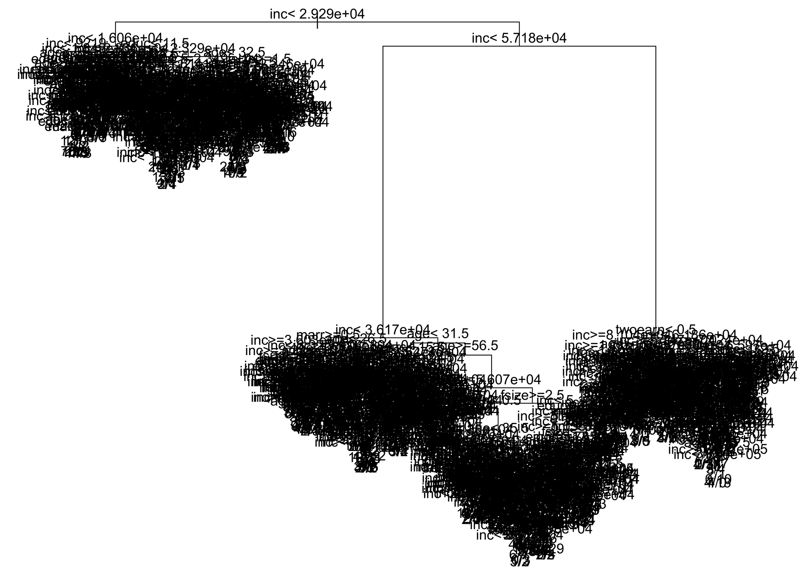
Do we need all 985 leaves (labels unreadable by design)? See Sections 3–4.
2) A quick summary on trees
Trees partition the predictor space using recursive binary splits.
Each split consists of a decision rule that sends \(x_i\) left or right.
For a numeric predictor \(X_j\), the rule is based on the threshold \(X_j<c\).
For a categorical predictor \(X_j\), the rule lists the set of categories sent left.
2) A quick summary on trees
The set of leaves gives a partition of the \(X\)-space.
For prediction, we let the observation \(x_i\) follow the path dictated by the splitting rules down the tree until it reaches a leaf:
for a continuous outcome, the prediction is the sample mean of \(y\) in that node;
for a categorical outcome, it is based on the category proportions of the training data in that node (e.g., the predicted category is the majority category in that node).
2) A quick summary on trees
Handles categorical (few levels) and numeric \(X\) and \(Y\) well.
No need to worry about the scale of the \(X\)’s.
Computationally efficient (can scale up well).
Does well in some cases where linear regression does not.
Smaller trees are very interpretable.
Performs automatic interaction detection.
Does variable selection.
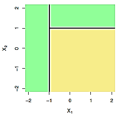
True classes: shading. The tree recovers the rectangular true boundary with two splits; a linear boundary cannot. Source: ISLR Fig. 8.7.
2) A quick summary on trees: problems
The step function a tree fits is crude and may not give the best predictive performance, e.g., it struggles with a linear relationship.
Does not handle categorical variables well when there are a lot of categories (most other methods don’t either, however).
Big/deep trees lose interpretability.
Unstable: a changed early split alters the whole tree below it.
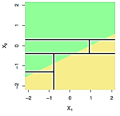
True boundary is linear: the tree needs a staircase of splits. Source: ISLR Fig. 8.7.
3) Choosing tree size
A tree is just a type of flexible model that we fit to data.
As with other nonparametric or high-dimensional models, increased complexity will result in better in-sample fit – the key question is how to restrict it.
For trees, the usual measure of complexity is the number of leaves or terminal nodes.
Too many leaves = overfitting! Easy to fall into this trap.
For best prediction performance, we will need to manage the bias/variance tradeoff, as usual.
3) Choosing tree size: minimization problem
Tree choice can be represented as a minimization problem over subtrees \(T\) of a big initial tree, with penalized objective \(Q(T,y)\):
\(|T|\) is the number of leaves – a measure of tree complexity.
\(\alpha\) is the “penalty” parameter that performs regularization. It plays the role of \(\lambda\) in penalized regression fitting.
If \(\alpha=0\), we would keep the full big tree, which overfits the data. We need to choose \(\alpha\) carefully: it is the key tuning choice.
3) Choosing tree size: minimization problem
How do we actually perform the minimization?
The idea behind the trees is simple, but trees are large and complex when viewed as a variable in an optimization problem.
The key to success here is a simple algorithm: cost-complexity pruning (weakest link pruning).
Breiman et al. (1984) showed that for each \(\alpha\) there is a unique smallest subtree of the big tree minimizing the objective function, and that pruning finds it exactly.
3) Minimization algorithm
Stage 1:Grow big. Grow a big tree first by recursive binary splitting, with a stopping criterion (e.g., at least 5 observations in each child node).
Rationale: we want to grow big initially, because a seemingly worthless split high in the tree may really play an important role lower down. So we let the data, not our prior beliefs, decide which early splits are worth keeping.
3) Minimization algorithm
Stage 2:Prune back. Recursively prune back the big tree from Stage 1: at each step, collapse the internal node whose removal gives the smallest increase in loss per leaf removed (the “weakest link”).
This gives a nested sequence of subtrees of the big tree that is guaranteed to contain \(\hat T_\alpha\) for every value of the penalty.
For a given \(\alpha\), choose the subtree that has the smallest \(Q(T,y)\).
Weakest link: for an internal node \(t\) with branch \(T_t\), let \(L(t)\) be the loss if \(t\) is collapsed to a leaf and \(L(T_t)\) the loss of its branch. The increase in loss per leaf removed is \(g(t)=\dfrac{L(t)-L(T_t)}{|T_t|-1}\). For example, collapsing a 3-leaf branch (\(|T_t|=3\)) with loss 20 to a leaf with loss 50 gives \(g(t)=\frac{50-20}{3-1}=15\). Collapse the node with the smallest \(g(t)\), then repeat; the successive values of \(g\) are the \(\alpha\)’s at which the optimal subtree changes.
3) Choice of \(\alpha\)
The remaining (most important) step is to choose \(\alpha\) from the data.
Not much surprise here: the usual approach is \(K\)-fold cross-validation (CV). In each fold, grow and prune on the training part and compute the error on the held-out part; pick the \(\alpha\) with the lowest average CV error.
3) Simple example: Boston data
Simple example with lstat only.
Perform 10-fold CV.
Y-axis: 10-fold mean squared error (MSE) relative to the sample mean fit vs. transformed \(\alpha\) on the X-axis (cp\(=\alpha\) divided by the RSS of the root; cp falls to the right, so trees grow).
Top axis: tree size. CV error falls steeply up to about 3 leaves, is lowest at about 7, then creeps back up: bigger trees fit noise. Bars: ±1 standard error (SE); dotted line: minimum + 1 SE (the “1-SE rule”, not used here, would pick a smaller tree).
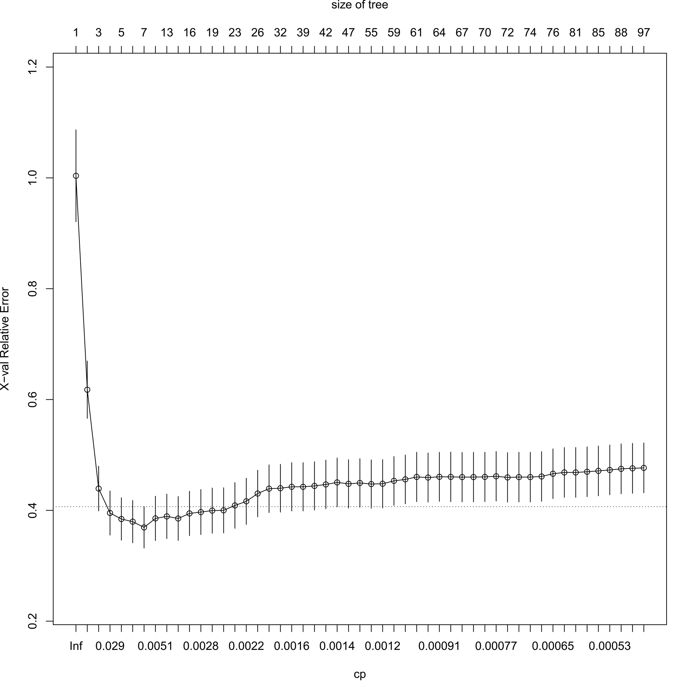
3) Simple example: Boston data
Three examples of tree fits for different \(\alpha\).
Smaller \(\alpha\) implies a smaller penalty on complexity and hence a bigger tree.
Note the nesting: each smaller tree is a subtree of the bigger one.
The middle tree has the CV-minimizing \(\alpha\).
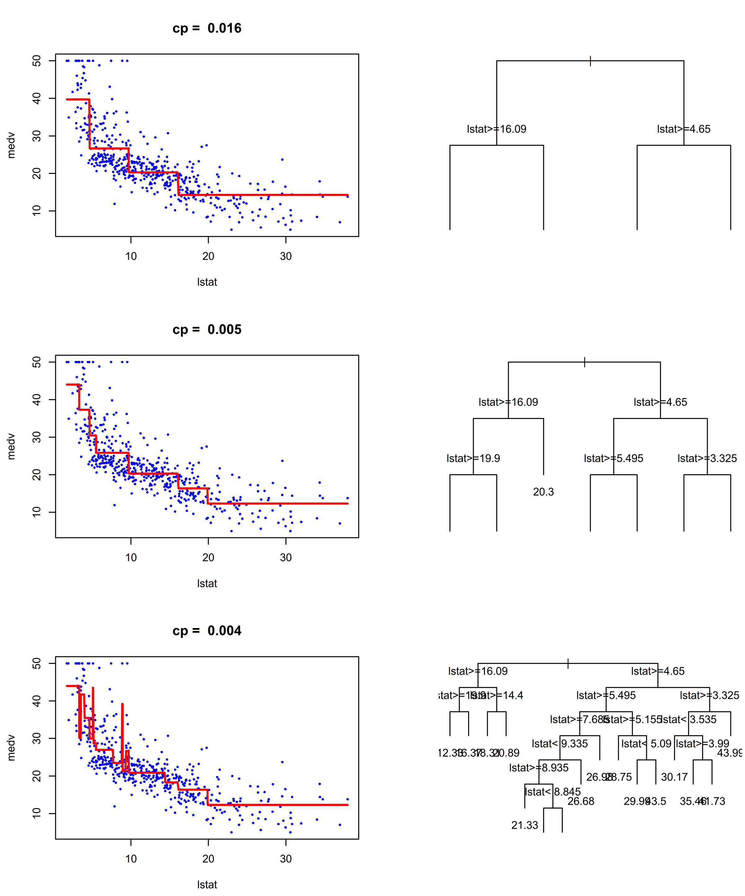
3) Simple example: Boston data
CV-minimizing tree:
The same 7-leaf tree as in Section 2. Here rpart put the condition lstat\(\ge c\) on the left branch (the lower-mean child), so the tree appears mirrored.
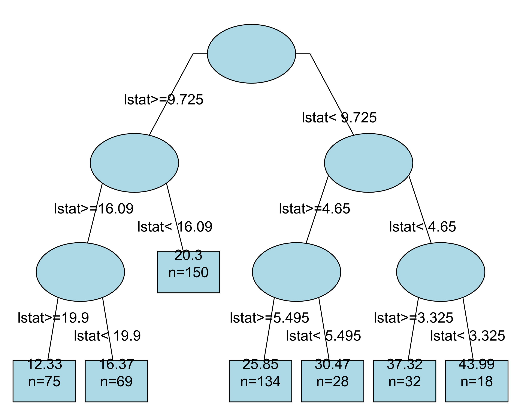
3) Interactive: prune a big tree with \(\alpha\)
4) Loss function for classification trees
Let us come back to the classification problem.
MSE is less natural here – we use a different loss.
Let the loss function be \(L(T,y)=\sum_{m=1}^{|T|}N_m\,L_m(y_m)\).
\(m\) indexes terminal nodes in tree \(T\); \(N_m\) is the no. of obs. in terminal node \(m\); \(y_m\) is the vector of outcomes for obs. in node \(m\); \(L_m\) is the node loss (next slide).
Let \(R_m\) denote the region of \(X\) corresponding to node \(m\), and \(\hat p_{mk}=\frac{1}{N_m}\sum_{i:\,x_i\in R_m}1(y_i=k)\), \(k=1,\dots,K\).
Observations in node \(m\) are classified to \(k(m)=\arg\max_k \hat p_{mk}\).
Some also use squared loss (MSE) for a binary \(y\).
Worked example (binary node, natural log): \(p=0.2\) gives misclassification \(0.2\), Gini \(2(0.2)(0.8)=0.32\), entropy \(\approx 0.50\); at \(p=0.5\) all three peak (\(0.5\), \(0.5\), \(\log 2\approx0.69\)).
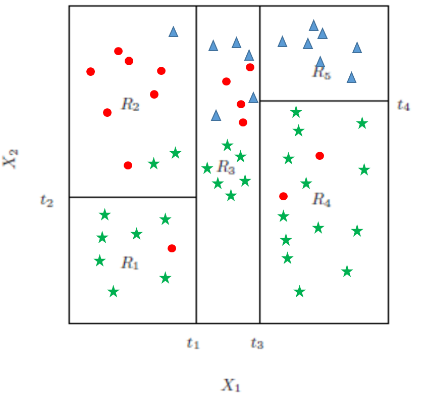
Adapted from ESL Fig. 9.2.
4) Interactive: grow a classification tree, watch Gini and cross-entropy fall
Two interleaved classes; CART picks the split that most reduces weighted impurity. Step through the splits and switch the criterion between Gini and Cross-entropy to see how recursive partitioning isolates regions. Lower min. obs. per leaf to watch the boundary overfit and train error collapse — an intuition for pruning (covered in Section 3).
4) Common loss functions: comments
Misclassification error is not differentiable and is relatively insensitive to changes in node probabilities, so it is not recommended for growing the tree.
Gini interpretation: error rate for a rule that assigns each observation to outcome \(k\) with probability \(\hat p_{mk}\). In the binary case, it equals \(2p(1-p)\), twice the variance of the 0/1 outcome in the node.
Typically, Gini or deviance is used for growing the tree.
Any of the three losses can then be used for cost-complexity pruning; misclassification is the usual choice.
4) R packages: tree and rpart
Two main tree packages in R: tree and rpart.
Neither allows all the options discussed above. Syntax and display of output differ, so “shop around” between the two depending on what you are doing.
tree syntax: tree.fit <- tree(y ~ x, data = df, control = tree.control(...))
rpart syntax: tree.fit <- rpart(y ~ x, data = df, control = rpart.control(...))
Full details are in the code, as usual.
4) Classification: 401(k) eligibility
CV-min Gini tree:
CV-min = CV-minimizing. Grown with Gini (rpart); CV error is the misclassification rate. Fit on the training sample (8,000 obs.). Each leaf shows the predicted class, then the counts of \(y=0\) / \(y=1\).
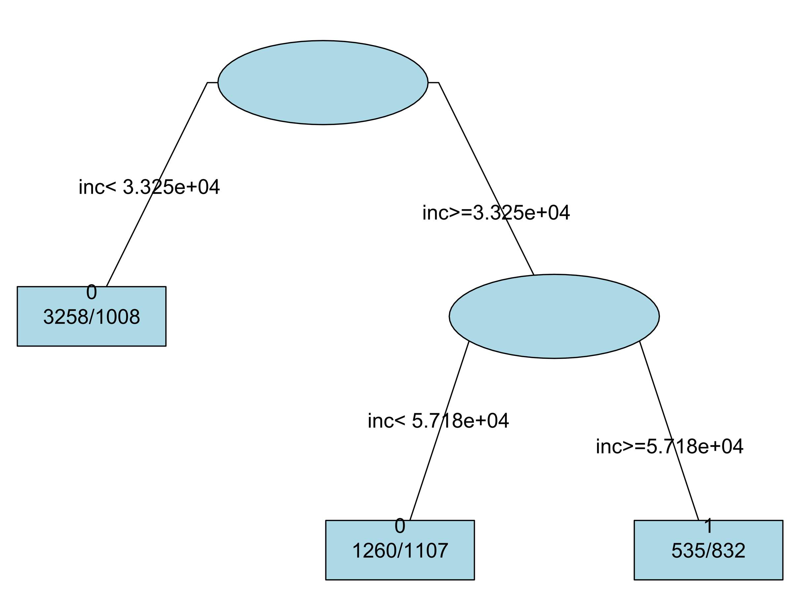
4) Classification: 401(k) eligibility
CV-min deviance tree (not unique; the smallest is shown):
Grown and CV-pruned on deviance (tree package). Both leaves of the left split predict 0: the split makes the nodes purer (lower deviance) without changing the predicted class.
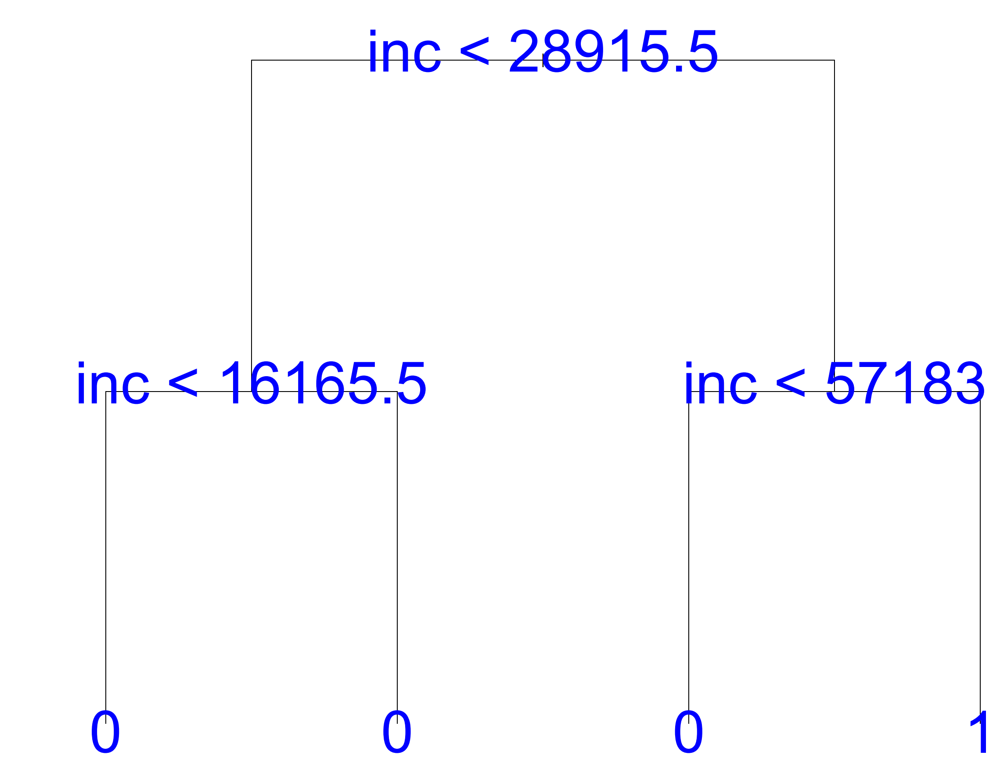
4) Classification: 401(k) eligibility
CV-min squared loss tree:
Grown and CV-pruned on squared loss (rpart, anova). Leaves show the share with \(y=1\) and the node size. Classify 1 if the share exceeds 0.5: only the rightmost leaf.
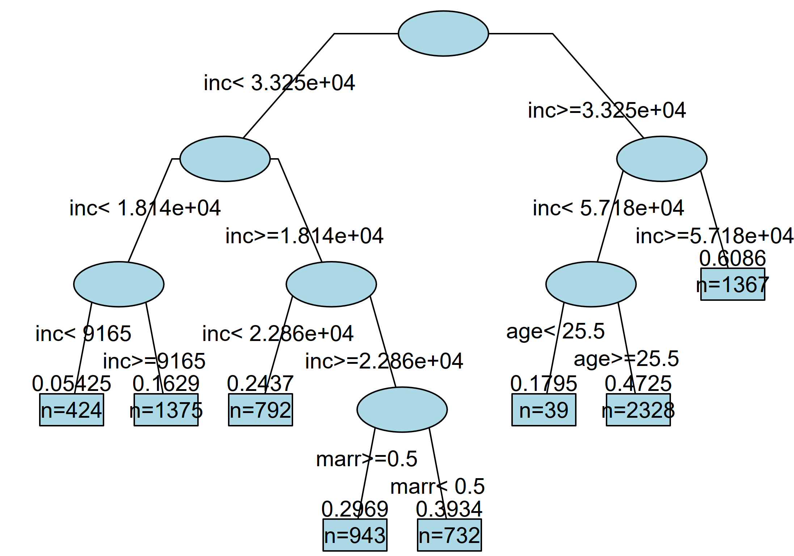
4) Test-set performance: trees vs. logit
All three trees give the same 0/1 rule (predict 1 if income is above about $57,000), so they make identical test-set predictions.
For reference, we also fit a logit model using the same variables; its results are in parentheses.
Test-set errors: trees 665/1,915 (logit 651; predicting 0 for everyone 735):
Actual 0
Actual 1
Predicted
0
1052 (1059)
537 (530)
1
128 (121)
198 (205)
4) Performance measures for classification
There is a lot of work on classification problems and, as a result, a lot of confusing jargon.
Below are some common terms you may encounter.
Confusion matrix = matrix of predicted vs. actual values:
Actual 0 (TN / FP)
Actual 1 (FN / TP)
Total
Predicted
0
1052 (TN)
537 (FN)
1589
1
128 (FP)
198 (TP)
326
Total
1180
735
1915
Lift (cumulative gains): summary of prediction performance comparing % of true positives (TP) to % classified as 1 (N).
ROC (Receiver Operating Characteristic): summary of prediction performance comparing % of true positives (TP) to % of false positives (FP).
4) Performance measures for classification
Lift and ROC assess \(\hat p(x)\) via predictions \(\hat y=1\big(\hat p(x)>s\big)\) as \(s\) varies (\(s\) is the cut-off; the score is the share of 1s in the leaf of \(x\)).
TP (true positives): % of \(y=1\) correctly classified. FP (false positives): % of \(y=0\) incorrectly classified. N: % classified as 1.
All three quantities go from 1 to 0 as \(s\) goes from 0 to 1:
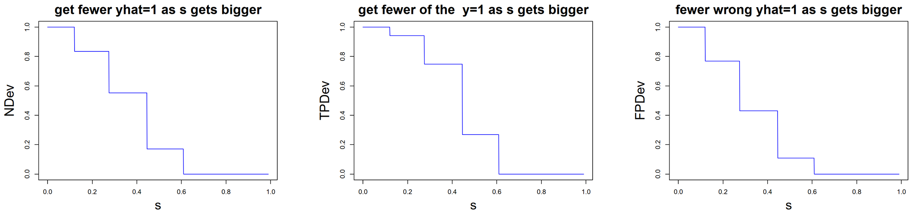
Worked point (deviance tree, test data, \(s=0.5\)): TP \(=198/735=0.27\),FP \(=128/1180=0.11\),N \(=326/1915=0.17\): the first kinks of the next slide’s curves. (NDev, TPDev, FPDev = N, TP, FP.)
4) Lift and ROC
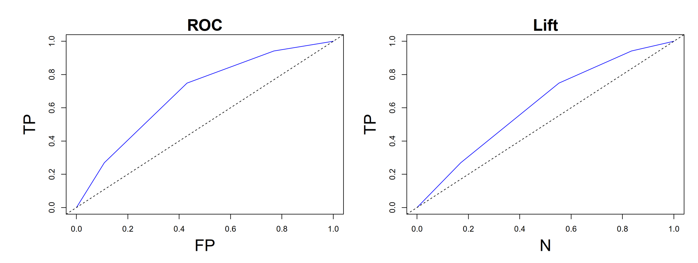
ROC plots TP against FP.
Lift (also called a cumulative gains chart) plots TP against N: at the same share classified as 1, higher TP is better.
\(s\) is decreasing as we move from left to right in each plot.
The 45-degree line represents random guessing (a score unrelated to \(y\)).
Sometimes we use the area under the curve (AUC) to summarize overall performance. Higher AUC is better.
4) Lift in 401(k) data
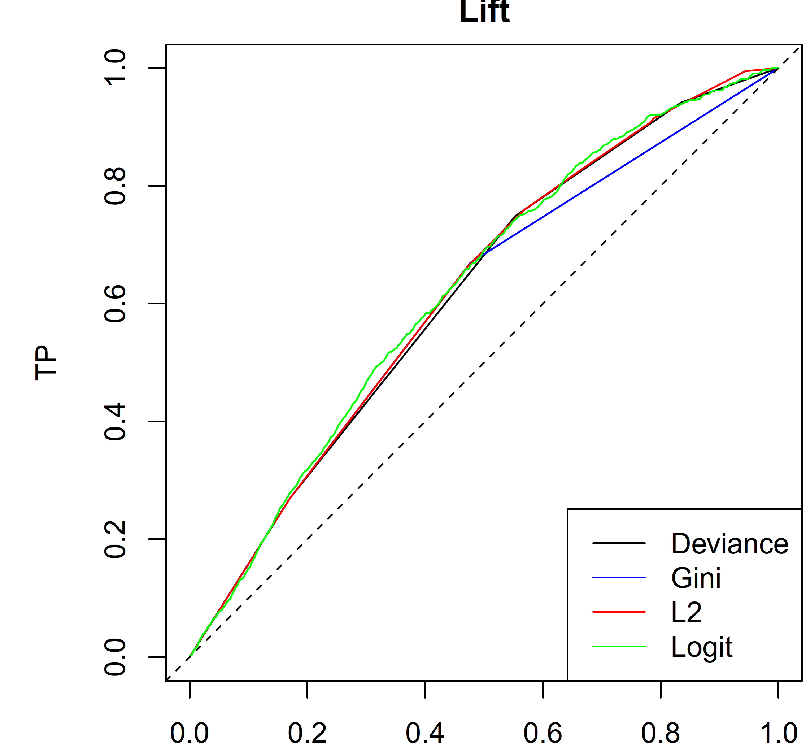
Deviance, L2 (squared loss) and logit nearly coincide; Gini is coarser.
5) Concluding remarks
Tree-based methods provide a benchmark in many modern machine learning / big data settings.
Small trees are simple to interpret, scalable, and give reasonable (if rarely the best) predictions “off-the-shelf”.
They perform variable selection and detect nonlinearities and interactions without careful user specification.
In the 401(k) example, the CV-pruned trees (3–8 leaves) all reduce to a single decision rule—predict 1 if \(\text{income} \gtrsim \$57{,}000\)—yielding 665/1,915 test errors (vs. 651 for logit and 735 for predicting 0).
They may underperform in prediction in their basic form; tree size is typically chosen by CV-based pruning.
They may be unstable: a small change in data can result in a large change in the estimated tree. Next: bagging and random forests reduce this instability; boosting mainly improves accuracy.